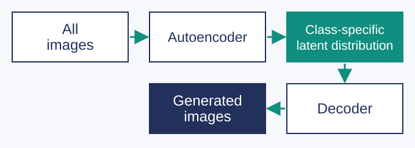
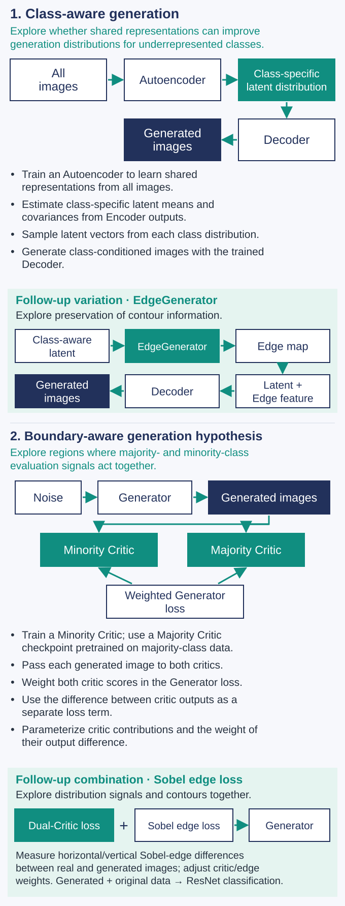

GAN augmentation for imbalanced image data
Beyond equalizing minority-class counts, I explored what makes generated samples useful for classification. I implemented class-specific generation using shared representations and a method combining two critic signals, examining why image quality does not necessarily translate to classification utility.
- Implementation: BAGAN/EdgeGenerator and Dual-Critic WGAN-GP/Sobel edge loss
- Focus: realism and diversity vs. useful classification-boundary information


Problem and context
Increasing minority sample counts alone may not provide the information needed for imbalanced classification. Majority samples can dominate generative learning signals, while sparse minority observations make distribution estimation and generation diversity unstable. The question was whether visually plausible images were also useful for downstream classification.
In the 2019 graduate team project, we compared Vanilla GAN, CGAN, and ACGAN. We created imbalanced MNIST and CIFAR-10 data, added generated images, and evaluated classification with LeNet and ResNet. My 2023 personal follow-up separately explored improving class-specific generation distributions and generating samples useful near classification boundaries.
My role
In the 2023 personal study, I implemented PyTorch model structures, loss functions, training loops, image generation, and downstream classification pipelines. The experiments allowed adjustment of critic contributions and loss weights. The 2019 experiments were team work.
Approach
Shared representations and class-specific latent distributions: BAGAN approaches
An autoencoder learned representations shared across all images. I estimated each class’s latent-vector mean and covariance from encoder outputs, sampled its latent distribution, and generated images with the trained decoder. I explored BAGAN and Convolutional BAGAN; a later variation combined EdgeGenerator contours with decoder features.
Combining two critic signals: Dual-Critic WGAN-GP
I used a minority-class critic and a Majority Critic checkpoint pretrained on majority data. Generated images were passed to both critics, and weighted scores contributed to the generator loss. Their output difference formed a separate loss term to explore generation away from class centers. This was a hypothesis about useful boundary samples, not verified boundary proximity.
Connecting contour information and classification evaluation
Sobel edge loss measured differences in horizontal and vertical contours between real and generated images and was combined with Dual-Critic loss. I implemented adjustable critic and edge weights and connected generated and original data to ResNet classification. Evaluation included F1 and G-mean alongside accuracy.
Overview of implemented approaches

Scope
Limitations identified during implementation
Each critic evaluates real/fake characteristics for its class; neither is a classifier separating the two classes. Similar or jointly high scores do not guarantee useful hard samples. Criteria were also insufficient for distinguishing shared class features, critic errors, ambiguous class mixtures, and generation artifacts. Sobel edges describe contours rather than a classifier’s semantic features directly.
Matched-condition quantitative comparisons and joint evaluation of realism, diversity, and boundary proximity were not completed. Further comparisons are needed to verify the learning effects of the edge term and final performance. The 2019 and 2023 experiments are not treated as a matched-condition performance comparison.
A revised research direction
I reframed the question around analyzing class-discriminating features and distance to the decision boundary in a separate classifier’s feature space, jointly evaluating realism and boundary proximity. Confidence filtering, soft labels, and before/after classification comparisons when adding generated data are also future work, not completed results.